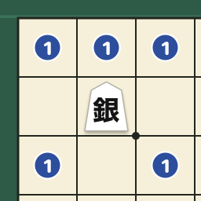

利きが見える将棋
どのマスに何枚効いているかが、盤に出る。ただで駒を取られる前に気づける、コンピュータと指す将棋。
将棋教室の大盤のような、クリームの盤と白いマグネットの駒で、コンピュータ（5段階）と本将棋を指します。1台をふたりで交代に使って指すこともできます。
- 利きの数が盤に出る。マスごとに、自分の駒が何枚効いているか（藍の丸と数・左下）と、相手の駒が何枚効いているか（朱の丸と数・右上）が出ます。両方・自分だけ・相手だけ・出さない を切りかえられます
- 指す前に、取られるかが分かる。駒を選ぶと、行ける所が「藍の点＝そこで取られない」と「朱の×＝ただで取られる・安い駒で取られる」に分かれます。いま取られそうな自分の駒には朱の輪、ただで取れる相手の駒には藍の輪が付きます
- ただ取りの振り返り。終わったら棋譜をたどれます。駒をただで取られた手には朱の印。どの手の前からでも指し直せます
- コンピュータはレベル1〜5（はじめての人〜約2秒深く読む）。平手（先手・後手）と、香落ち・角落ち・飛車落ち・二枚落ち・四枚落ち・六枚落ち
- 待った・ヒントは何回でも使えます。連続王手の千日手は王手をかけた側の負け、ふつうの千日手は引き分け
- 登録・課金はありません。記録はこの端末の中だけに保存します。画面のいちばん下に小さな広告が出ます（画面いっぱいの広告・動画の広告は出しません）